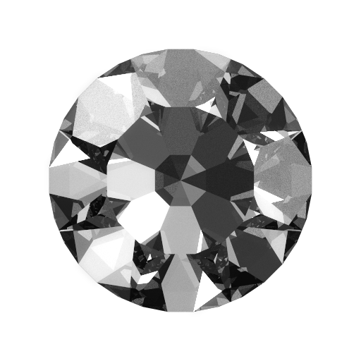

Diamond Deck Tracker
Dein kostenloser Deck-Tracker mit Overlay, Statistik und Metadecks. Your free deck tracker with overlay, statistics and meta decks.
Live-OverlayLive overlay
Restkarten mit Ziehchance und alles, was der Gegner gespielt hat.
Cards left with draw chances and everything the opponent played.
Gegner-Deck erkennenOpponent deck guess
Erkennt das Deck des Gegners und hilft bei Geheimnissen.
Guesses the opponent's deck and helps with secrets.
StatistikStatistics
Siegquote je Deck, Klasse und Gegner-Deck, Wochenrückblick.
Win rate per deck, class and opponent deck, weekly recap.
MetadecksMeta decks
Ein starkes Deck pro Klasse, Deckcode mit einem Klick kopieren.
One strong deck per class, copy the deck code with one click.
Hinweis: Windows kann beim ersten Start „Der Computer wurde durch Windows geschützt“ anzeigen, weil die App noch nicht signiert ist. Klicke dann auf „Weitere Informationen“ und „Trotzdem ausführen“. Danach aktualisiert sich die App bei jedem Start von selbst. Note: On first start Windows may show “Windows protected your PC” because the app is not signed yet. Click “More info” and “Run anyway”. After that the app updates itself on every start.